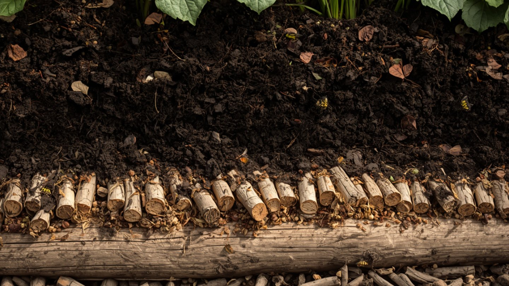

Hochbeet richtig schichten: der Aufbau von unten nach oben
Ein Hochbeet komplett mit gekaufter Erde zu füllen, ist teuer und verschenkt seinen größten Vorteil.
Der Sinn der Schichtung ist nicht Deko: Ein Hochbeet ist ein liegender Komposthaufen mit Pflanzen obendrauf. Die unteren Lagen verrotten über Jahre, geben dabei Wärme und Nährstoffe ab und sacken langsam zusammen. Wer das versteht, spart Geld, gießt seltener und erntet früher.
Die vier Schichten von unten nach oben
Klassisch wird ein Hochbeet in vier Lagen aufgebaut. Grob unten, fein oben – von der Drainage bis zum Wurzelraum.
| Schicht (von unten) | Material | Höhe ca. | Aufgabe |
|---|---|---|---|
| 1 – Grobes | Äste, Zweige, Strauchschnitt | 20–30 cm | Drainage, Luft, langsame Verrottung |
| 2 – Grünschnitt | Laub, Rasenschnitt, Staudenreste | 15–20 cm | Füllung, Wärme beim Verrotten |
| 3 – Grober Kompost | halbreifer Kompost, Mist, Grasnarbe (umgedreht) | 15–20 cm | Nährstoffvorrat für Jahre |
| 4 – Pflanzschicht | reifer Kompost + gute Gartenerde | 20–25 cm | Wurzelraum, Aussaat & Pflanzung |
Ganz nach unten, direkt auf den Boden, gehört ein Wühlmausgitter (engmaschiger Draht). An die Innenwände eine Noppenfolie, damit das Holz nicht dauernass wird und schneller verrottet.
Warum die Reihenfolge nicht egal ist
Grob nach unten, fein nach oben – das hat zwei Gründe. Das grobe Astwerk hält das Beet luftig und verhindert Staunässe; ohne diese Drainage fault die Füllung, statt zu verrotten. Und die grobe Basis verrottet am langsamsten, liefert also über die längste Zeit Wärme und Nährstoffe. Die feine Erde oben braucht es dort, wo die Samen keimen und die feinen Wurzeln wachsen – kein Sämling kommt in grobem Häckselgut hoch.
Das erste Jahr ist ein Starkzehrer-Jahr
Frisch geschichtet ist ein Hochbeet extrem nährstoffreich – zu reich für empfindliche Kulturen. Das erste Jahr gehört den Starkzehrern: Tomaten, Zucchini, Kürbis, Gurken, Kohl. Sie verwerten den Überschuss, der sonst als Nitrat ins Grundwasser ausgewaschen würde. Erst ab dem dritten, vierten Jahr, wenn die Kraft nachlässt, kommen Schwachzehrer wie Kräuter, Bohnen und Salat besser zurecht. Diese Abfolge ist eine ganz normale Fruchtfolge – nur zeitlich gestreckt.
Warum dein Hochbeet jedes Jahr sackt
Es ist kein Fehler, sondern Beweis, dass es funktioniert: Die unteren Schichten verrotten und verlieren an Volumen, das Beet sackt pro Jahr um mehrere Zentimeter. Deshalb im Herbst oder Frühjahr oben reifen Kompost und Erde nachfüllen. Nach etwa fünf bis sieben Jahren ist die grobe Basis komplett zu Humus zerfallen – dann lohnt es sich, das Beet einmal neu zu schichten. Der Inhalt ist dann bester Gartenkompost, kein Abfall.
Die häufigsten Fehler
Nur mit Erde gefüllt. Teuer, schwer, und ohne die verrottende Basis fehlen Wärme und der Nährstoffnachschub. Frisches Holz von Nadelbäumen oder Walnuss verwendet. Beides hemmt das Wachstum – Laubholz aus dem eigenen Garten ist besser. Zu fest getreten. Ein Hochbeet lebt von Luft; verdichtetes Material fault. Locker schichten, nicht stampfen.
Ein Hochbeet ist kein Behälter, den man einmal füllt, sondern ein Prozess, der über Jahre läuft. Wer die Schichten versteht, macht aus Gartenabfall mehrere Jahre Ernte – und muss nur oben nachlegen.
Hortini merkt sich, was in welchem Beet steht, und schlägt dir fürs erste Jahr die passenden Starkzehrer vor – und Jahr für Jahr, was als Nächstes dran ist.
Kostenlos ausprobieren